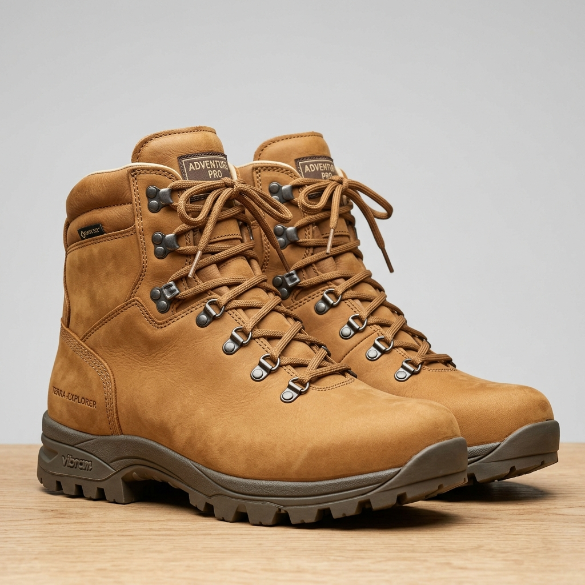

品牌故事
AuraStride 極光步履 —— 用美學與科技重新定義行走
誕生自對「行走」的極致追求
AuraStride 創立於 2020 年，總部設於台北。我們的創辦人是一位擁有三十年正裝皮鞋開發經驗的製鞋大師與兩位人體工學運動醫學教授。他們在一次跨界論壇中發現：市面上的正裝鞋往往美麗卻僵硬累腳，而運動避震鞋雖舒適，卻又因外觀難以登上正式優雅場合。
「為什麼我們不能做一雙外型極具美學張力，穿著感卻如踩雲朵的完美鞋款？」
正是這個疑問，催生了 AuraStride 極光步履。我們相信，每一雙鞋都是美學雕塑與生物力學工程的結晶。我們致力於打破正裝、休閒與運動的界線，讓行走成為一種美妙的身體律動享受。

AuraStride 核心支柱
高級美學張力
我們的設計師團隊來自倫敦與米蘭，將極簡主義線條、莫蘭迪色系與流體雕塑相結合。每一雙 AuraStride 都是一件腳上的流動藝術品，旨在展現穿戴者高雅而不張揚的獨特品味。
生物力學科技
獨家開發的氮氣超臨界發泡中底，搭配符合人體工學的足弓支撐鞋床，能有效降低膝關節衝擊力 25%。我們在運動鞋中加入全掌防扭轉碳板，將專業跑鞋科技無縫移植至日常鞋款中。
永續與環保足跡
我們高度重視地球環境。AuraStride 的飛織系列鞋款有 60% 紗線源於回收海洋廢棄塑料；真皮皮革則全部選用通過國際 LWG 環保金牌認證的永續牧場皮革，並使用無毒水性環保膠水貼合。

從不妥協的手工細節
雖然科技在進步，但有些細節唯有雙手能賦予溫度。一雙 AuraStride 皮鞋從設計到成鞋需要經過 120 多道工序，其中核心的皮面縫製與邊緣擦色全部由擁有十年以上經驗的匠人手工操作。
當機器大量生產複製品時，我們堅持每一雙鞋都有其細微的皮紋差異與手工擦色的層次感。這種慢工細作的態度，正是高級訂製鞋履的靈魂所在，也是我們回饋顧客信任的唯一方式。
【邱于庭的鞋子店】
每一步的日常，都有我們溫柔撐托。
「找到一雙懂你的鞋，就像遇到一個懂你的人。」
不論你是在尋找一雙輕盈好走的【走路鞋推薦】款，還是網路上討論度極高的【防水鞋推薦ptt/dcard】名單，我們這裡都有。
我們不賣流於表面、華而不實的包裝，只為你挑選真正防滑、透氣、釋壓，且能融入你生活各種場景的命定鞋款。想找好看的【白鞋推薦男】或是各大論壇熱議的【女運動鞋推薦dcard】熱門款嗎？
核心選鞋理念 (Our Philosophy)
為什麼選擇「邱于庭的鞋子店」？
我們懂你每天出門前的猶豫，更懂你雙腳在忙碌一日後的疲憊。在這裡，我們重新定義「好穿的鞋子」，將機能科技與日常美學完美縫合。
- ✔ 極致包覆，告別咬腳與磨腳 深入分析亞洲人腳型，我們特別引進專為亞洲人設計的【寬楦運動鞋】與【寬楦女鞋】。如果你正在尋找【大尺碼鞋子男】，或是想知道哪裡有【大尺碼男鞋門市】，我們都能為您徹底解決「鞋子前面太緊、腳趾痛」的痛點。若是女孩們苦苦尋覓的【大尺碼女鞋推薦dcard】款式，來這裡也能輕鬆找到！
- ✔ 久站不累的秘密 專為餐飲業、醫護、講台上的你打造！無論你需要的是具備保護力的【安全鞋推薦】、【防滑工作鞋】，還是能應付室內環境的【室內運動鞋推薦】，我們精選了高彈力的【氣墊鞋推薦】款。即使你需要專業的【防水工作鞋】或【防水安全鞋】，我們的高機能減壓鞋墊也能均勻分散足底壓力，讓舒適度從清晨延續到深夜。
- ✔ 無懼風雨的晴雨對策 台灣多雨的天氣，交給我們。我們嚴選高規格的【防水慢跑鞋】與【防水休閒鞋】，甚至為上班族準備了高質感的【防水皮鞋】以及不怕髒的【防水白鞋】。透氣不悶熱，讓你即使在暴雨的下雨天，步伐依舊優雅乾爽。如果你好奇【健走鞋慢跑鞋差別】在哪裡，我們的客服隨時準備為你解答，並為你提供最專業的【慢跑鞋推薦】與【健走鞋推薦】。
分類導覽區 (Shop by Category)
—— 滿足生活所有場景的長尾精選 ——
顧客痛點救援 (Customer Care / FAQ)
雙腳的小情緒，我們幫你照顧
💬 「買新鞋總是容易磨腳、咬腳？」
我們提供專業的【鞋子尺寸男】與【女鞋尺寸】線上對照指南。若有鞋子後面太鬆、前面太緊的疑惑，一對一線上客服隨時為你解答楦頭修正與鞋墊搭配技巧。
💬 「白鞋變黃、皮鞋髒了怎麼辦？」
網頁特設「鞋子保養專區」，為你推薦最適合台灣氣候的鞋子防水噴霧，並分享帆布鞋清洗與洗白鞋的居家小撇步，讓愛鞋永遠像新的一樣。
尋找命定鞋款，從這裡開始。
不論你是正在找一雙能陪你走得更遠的【運動鞋推薦】款，還是一雙讓你在球場上發光的【籃球鞋推薦】名單，【邱于庭的鞋子店】都已經為你準備好了。